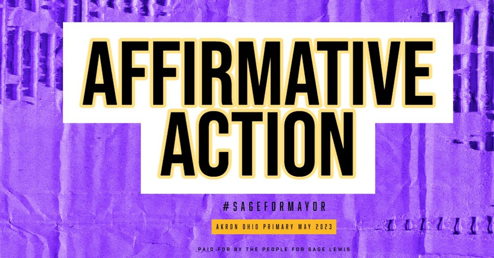

Timeline photos
I've been having some interesting conversations about the phrase "Affirmative Action."
Several White friends have told me that I should no longer use it. That it has a bad stigma to it.
But then several Black friends thought of it positively.
I am going to run a campaign that focuses very heavily on the African American community in Akron. I'm not afraid to use words that might make White people uncomfortable. (We could use a little more discomfort in our lives in the name of social justice.)
What do you think? Is the phrase "Affirmative Action" a phrase I should continue to use?
#sageformayor